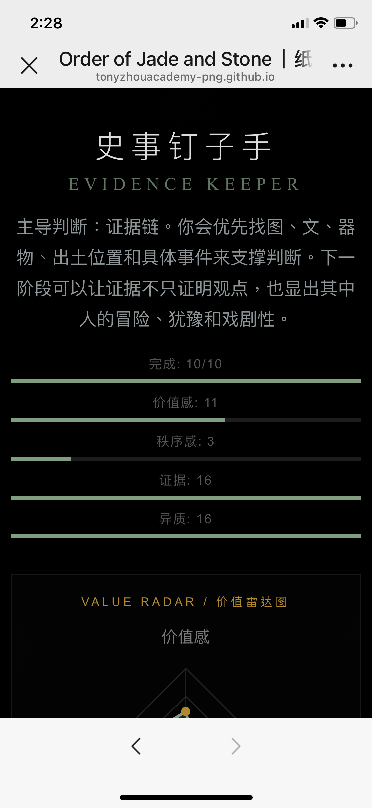
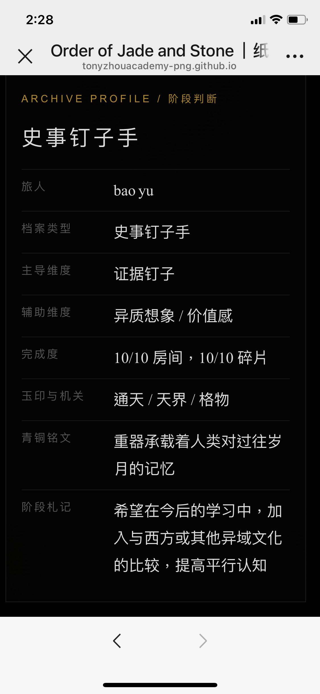

玉不是装饰
“宝玉系列”把玉器从美物推进到身体、等级与宇宙秩序的关系。

她在课程中持续追问：器物、铭文、拓片和空间如何保存秩序，又如何被陌生经验重新打开。
宝玉的线索不是抒情，而是结构：从玉、青铜和地理空间里读出秩序如何被保存。


她的判断不是“知道很多器物”，而是能把器物背后的秩序读出来。
“宝玉系列”把玉器从美物推进到身体、等级与宇宙秩序的关系。
全形拓、铭文和青铜器共同保存一种治理记忆。
她把器物上的制度感转回房间、陈设和生活秩序。


2026.09.09 的阶段测验里，宝玉同样抵达“史事钉子手”，但她的动力更像一条双线：证据链把判断钉住，异质想象把问题继续推远。

她的最高维度不是单纯秩序，而是证据与异质同时升高。宝玉开始把作品当成一组需要查证的材料，也把材料背后的通天、天界与格物问题重新打开。

档案页把她的玉印与机关归入“通天 / 天界 / 格物”，青铜铭文则转化为“重器承载着人类对过往岁月的记忆”。她下一阶段的方向，是把中国艺术史与西方或其他异域文化并置比较。
宝玉这条线的核心，是让器物里的秩序接受陌生材料的追问。
从器物、铭文、拓片中读结构。
把器物读成证据链、制度记忆和异质想象。
用强命名力抓住课程问题。
从制度读法转向跨文化比较。